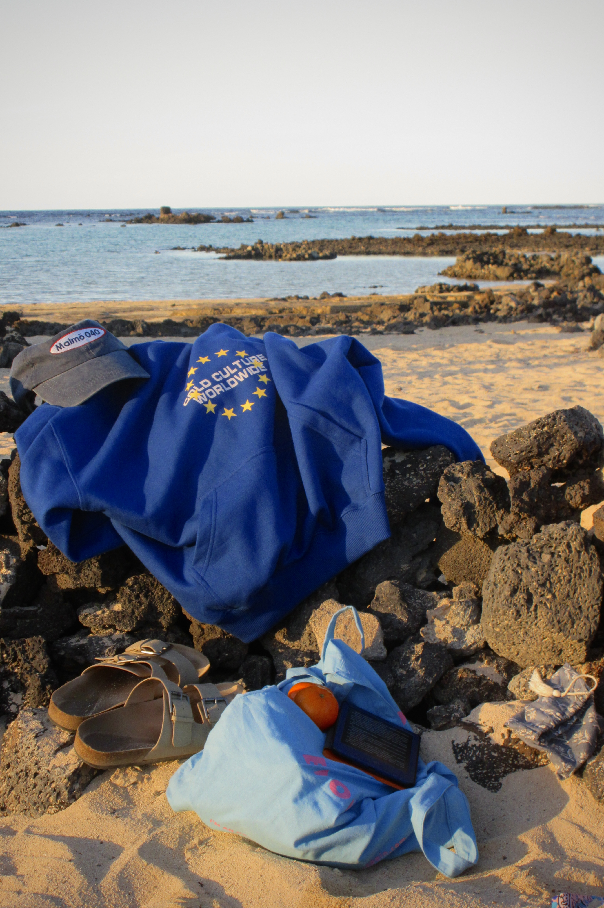
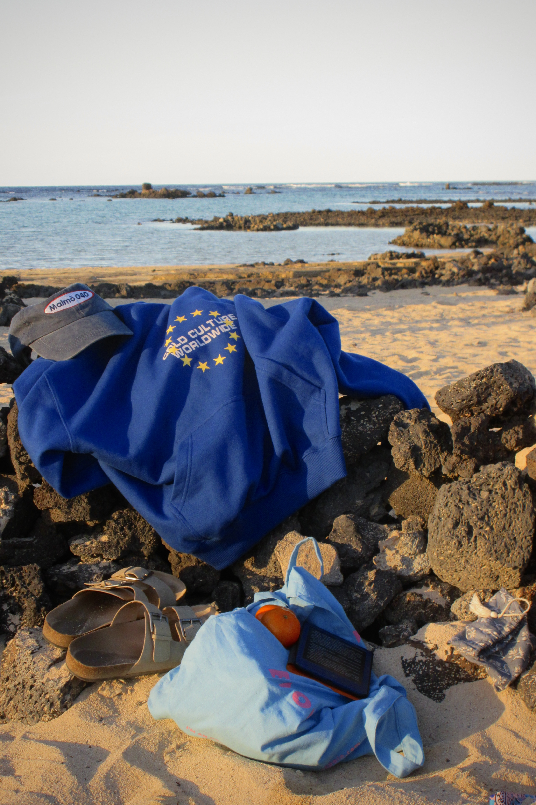

Lanzarote
enero. 2025. Lanzarote
Para celebrar el fin de exámenes del primer cuatrimestre del segundo curso de carrera, mis amigos de la universidad y yo decidimos hacer un viaje de cinco días a Lanzarote donde visitamos varios de los sitios turísticos más famosos así como diferentes playas. Aquí os dejo algunas de las fotos que hice con la cámara digital que más me gustaron.


 
